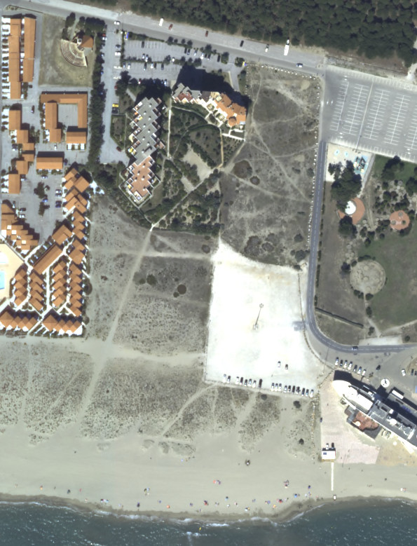

Nous sommes un groupe de riverains et d’usagers réguliers d’un chemin situé à Le Barcarès (66) reliant la plage du Lydia à la rue du Mas de la Grêle, emprunté depuis des décennies par les habitants, les piétons et les cyclistes.
Liste de diffusion du Collectif : pour rejoindre le collectif abonnez-vous à la liste de diffusion
Pourquoi ce collectif ?
Le 28 octobre 2024, la Commune du Barcarès a vendu le terrain incluant ce chemin public d'accès à la plage à un promoteur privé, malgré :
- son utilisation continue et pacifique par le public depuis 1970 et jusqu'au 30 juillet 2025 (affectation à l'usage public),
- l'absence de procédure de désaffectation
- son rattachement au Domaine Public, le déclassement par anticipation était caduc le 26 avril 2024 soit 6 mois avant la signature de l'acte de vente,
- l’existence d’une charge réelle rendant la parcelle inconstructible (cf cahier des charges de 1968).
La parcelle est classée dans le Domaine Public de la ville depuis 1969.
Elle est aménagée d'un parking public : clôture de grosses pierres et de barrières en bois, portique en bois autour de l'entrée, lampadaires

Notre action en justice
Le 30 juillet 2025 le promoteur a installé des palissades bloquant toutes les entrées donnant accès aux chemins piétonniers traversant le terrain, interdisant ainsi l'usage du chemin public d'accès à la plage. Pour conserver l'usage public du chemin nous avons engagé une procédure contentieuse devant le tribunal administratif afin de:
- faire constater l'usage public de toute la parcelle et en particulier du chemin de l'Estany,
- faire constater la nullité de la vente,
- reconnaître le maintien du chemin dans le domaine public.
Prochaine étape - plainte pénale avec constitution de partie civile pour :
- atteinte à la continuité du domaine public (clôture du chemin public d'accès à la plage)
- exécution de travaux non autorisés ( le promoteur Cardinal a exécuté des travaux sur un terrain du domaine public = pose de palissades)
- trouble manifestement illicite
- violation d'une charge d'urbanisme
- enrichissement sans cause
- favoritisme (vente de gré à gré, autorisée mais pas à un prix aussi bas)
- prise illégale d'intérêts
- détournement de fonds publics
- abus de confiance / escroquerie
Motifs :
- le promoteur immobilier Cardinal a installé une palissade le long de la limite de propriété interdisant d'emprunter le chemin public d'accès à la plage,
- les permis de construire ont été validés par le Conseil d'Etat grâce à plusieurs fausses déclarations (situation en "dent creuse", quartier d'immeubles...) et surtout malgré l'inconstructibilité du terrain,
- l'acte de vente détourne la conclusion du TJ (qui statuait uniquement sur l'absence de servitude non aedificandi) en affirmant que le TJ a déclaré le terrain constructible,
- l'acte de vente dissimule l'existence d'une charge réelle sur le terrain empêchant le projet immobilier de l'acquéreur,
- le promoteur immobilier avait connaissance de la charge d'urbanisme : il en a été informé en 2018 et elle est mentionné dans l'acte de vente de 2024,
- la Commune a reçu la parcelle de terrain gratuitement de la SEMETA,
- la mairie l'a vendue pour 4 millions d'€ alors qu'elle est en front de mer, mitoyenne du paquebot Lydia, avec deux permis de construire expurgés : sa valeur réelle est entre 13 et 17 millions d'euros (cf analyse détaillée).
Documents publics
Nous mettons à disposition les éléments factuels et juridiques essentiels de notre dossier :
- Historique du chemin (témoignages)
- Copie Clause de 1969 (parcelle Estany)
- Copie Clause de 1970 (appartement Estany)
- Copie Acte de Vente de 2024 (parcelle Lydia)
- Vil Prix : Analyse de la valeur vénale
- Requête déposée au tribunal administratif
- Délibération du Conseil Municipal n°25 cession AD 52- 2018
- Délibération du Conseil Municipal n°50 déclassement - 2018
- Délibération du Conseil Municipal n°40 désaffectation - 2024
- Courriers adressés à la DDTM et à la préfecture
(Les liens seront activés au fur et à mesure de la publication des documents.)
Rejoindre le collectif
Si vous êtes usager de ce chemin, riverain concerné, contribuable du Barcarès ou simplement citoyen soutenant la défense du domaine public, vous pouvez :
- rejoindre le collectif en vous abonnant à la liste de diffusion
- nous contacter 📧 contact.chemin.lebarcares@tutanota.com
Toutes les actions sont menées dans le respect du droit et de la transparence.